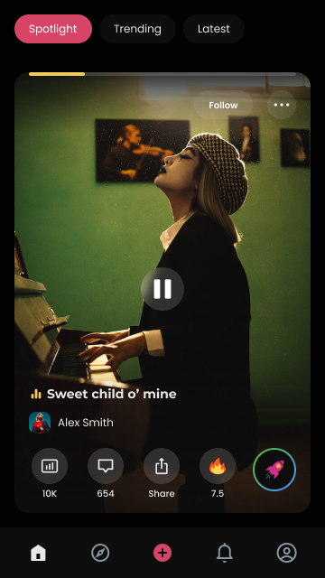
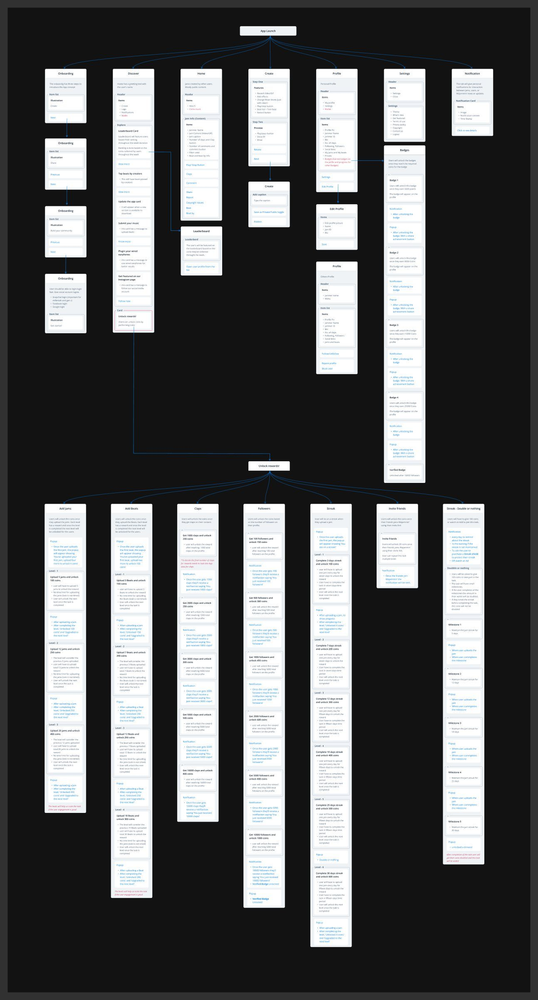
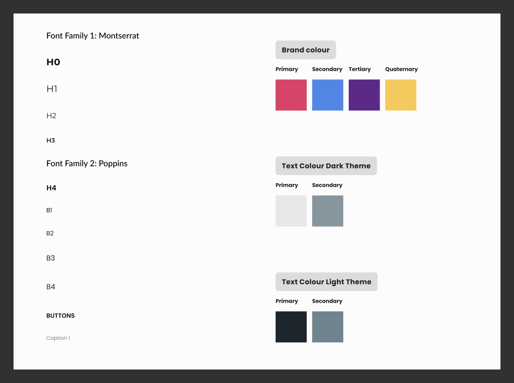
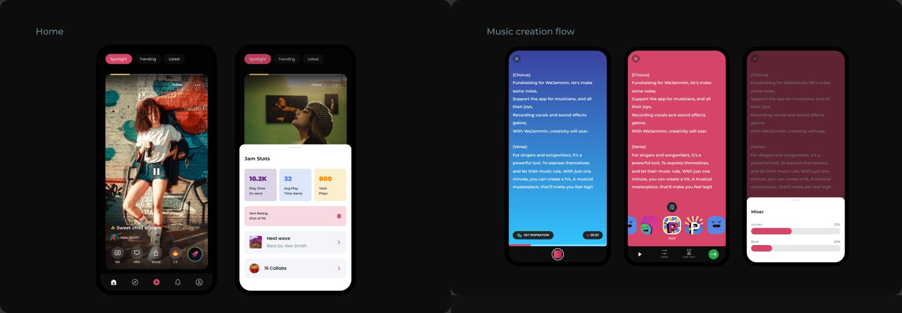
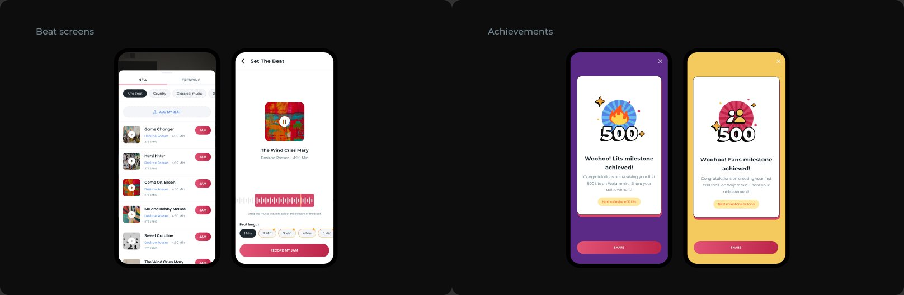
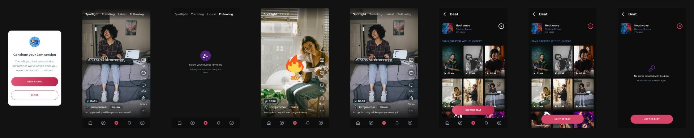
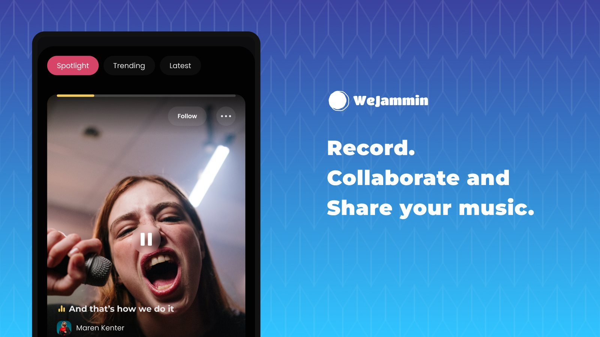

WeJammin
Make a song on your phone in a minute, then share it with musicians worldwide.



Context
WeJammin is a music creation app and community. Pick a beat, write lyrics, record vocals over it with voice effects, mix and share a jam in about a minute. Other musicians react, collaborate on your beats and climb the rankings. I led UX and product design from the first wireframe to the Play Store.
The problem
Making a song meant a studio, a producer and a lot of money. Talented singers and rappers on their phones had no simple way to record over a real beat, and nowhere to be heard by people who care about music.
Research
How
What we learned
Start from the beat
Most creators don't write melody first. They find a beat and jam on it.
A minute is the limit
If recording takes longer, people abandon it before sharing.
Feedback keeps people creating
Plays, claps and ratings brought creators back far more than features did.
Who it's for
The bedroom singer
Sings every day, has never recorded properly. Wants to be heard.
The producer
Makes beats and wants others to jam on them.
Structure and direction
IA and gamification map
Every section from onboarding to notifications, plus the full reward system: levels for jams, beats, claps, followers, streaks and invites.

Visual system
Montserrat and Poppins, a bold four-colour brand palette and separate dark and light text themes.

The design
Home and creation
A vertical feed with jam stats, then a three-step studio: write lyrics, record over the beat with voice FX, and mix vocals against the beat.

Beats and milestones
Browse beats by genre, select a section of the waveform to jam on, and celebrate milestones with shareable cards.

Home 2.0
A redesigned feed with following, resume-your-session prompts and a page for every beat showing the jams made with it.

Play Store
Store assets for launch: record, collaborate and share your music.

Key decisions
Beat first, then voice
Creation starts from a beat, the way creators actually work.
One minute to a finished jam
Lyrics, recording and mixing fit in a single short flow.
Rewards that bring people back
Levels, streaks and milestones for creating, not just consuming.
Every jam is a collab
Each beat page shows everything made with it, so producers get discovered too.
Outcome
Want this depth
on your product?
20 minutes. You leave with a plan, even if we don't work together.
Replies within 24 hours.